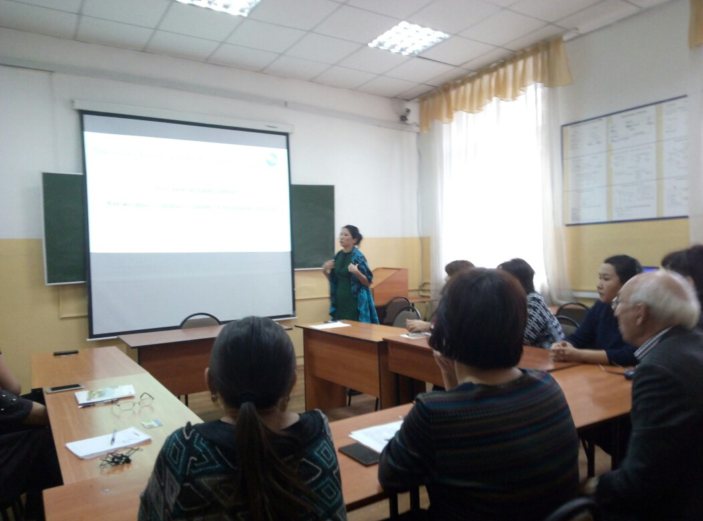
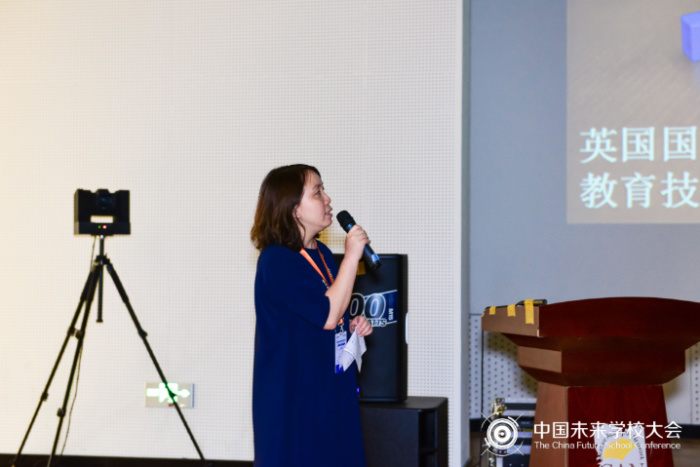

首页
资讯
活动
资源
专家
郑老师,欢迎您！
最新资讯
LATEST INFORMATION
教育大数据应用技术国家工程实验室正式启动
Nov • 02 / 2017
中新网武汉11月2日电 (党波涛 郝日虹 艾启平)教育大数据应用技术国家工程实验室(以下简称工程实验室)2日在华中师范大学正式启动。
陕西省教育大数据建设专题培训会召开
Oct • 31 / 2017
2017年10月31日下午，陕西省教育厅组织召开了教育大数据建设专题培训会，陕西省教育厅总会计师刘宝平出席并讲话。会议由陕西省教育厅办公室主任申雪峰主持。
高校大数据应用研讨会在京召开
Nov • 03 / 2017
11月3日，“引领卓越，大数据助推高校综合改革——高校大数据应用研讨会”在北京师范大学英东学术会堂召开，来自国内200多所高校的信息化相关部门主要负责人、大数据技术与应用等相关领域专家共计350余人参加会议，围绕“发展教育大数据，推动高校综合治理”的主题，共同探寻高校大数据建设规范，促进高校大数据建设与应用协作交流，推动大数据在教育领域的深度应用。
【教育大数据】解读5年教育新变化
Sep • 16 / 2017
央视网消息：昨天（28日），教育部在例行新闻发布会上，首次以“大数据看变化”为主题，用数据解读5年来的教育新变化，晒了一份“教育清单”。
点击加载更多...
热点资讯
HOTSPOT INFORMATION

Round table on the subject “The use of Big Data in education”（ Turan University）
Oct • 27 / 2017
从技术和产业看，如何推动教育大数据和自适应学习的应用？
Jan • 20 / 2017
【GES】GSV创始人：在加速数字化的世界中，教育决定成败
May • 16 / 2017
面对未来的STEM领域人才缺口，英国教育界正在采取哪些措施？
July • 16 / 2017
GES未来教育大会开幕在即 从中国看世界教育的未来
Paul • 16 / 2017
推荐资讯
RECOMMENDED INFORMATION
“大数据”如何应用于教育领域？
Aug • 13 / 2017
看高顿网校如何通过大数据连接知识与服务
Nov • 16 / 2017

英国驻华大使馆刘静：大数据是怎样在英国课堂应用的？
Nov • 16 / 2017
【GET2017】朗播网创始人杜昶旭：人工智能和大数据如何影响在线教育
Nov • 16 / 2017
教育部发文件力推教师管理信息化，要建教师队伍大数据
Apr • 20 / 2017